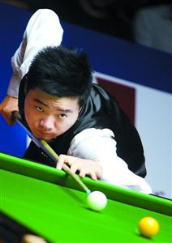
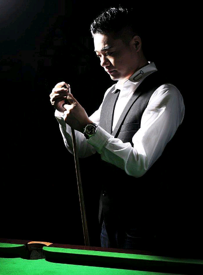
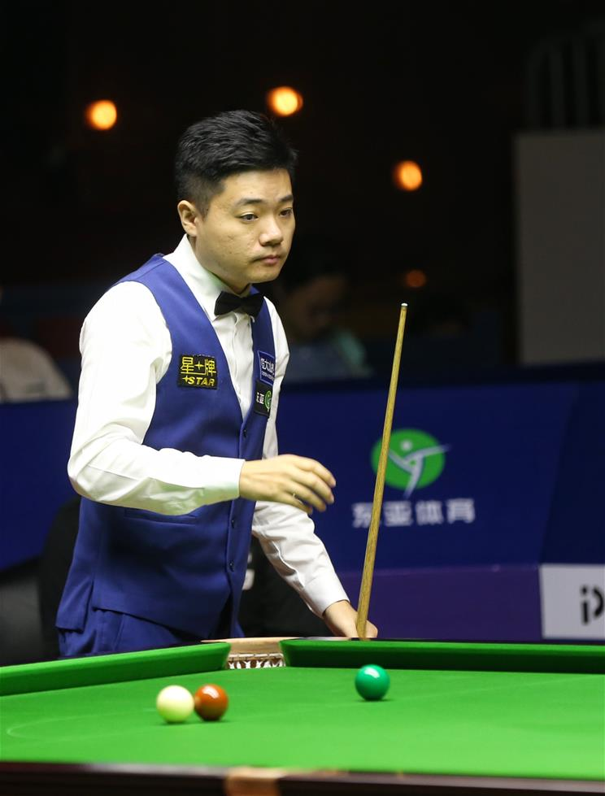
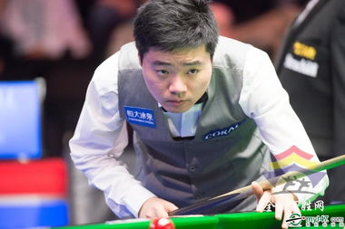

陈鑫吴的个人网站
台球运动员丁俊晖

丁俊晖，1987年4月1日出生于江苏省宜兴市，中国男子台球队运动员，斯诺克球手，就读于上海交通大学。8岁接触台球，13岁获得亚洲邀请赛季军，从此“神童”称号不胫而走。丁俊晖打球沉着稳健，善于思考，控球细腻。

职业生涯共获得11次排名赛冠军（单赛季第五次在大型排名赛称雄，追平亨德利的最高纪录）、2次PTC分站赛冠军以及1次温布利大师赛冠军，共打出6次单杆147。

2014年12月3日，丁俊晖成为台联有史以来第11位世界第一，同时也是首位登上世界第一的亚洲球员。2016年斯诺克6红球世锦赛决赛丁俊晖8-7战胜宾汉姆，首次获得6红球世锦赛冠军。

12月15日，获得2016CCTV体坛风云人物年度最佳非奥项目运动员奖提名奖。2017年9月24日，在2017斯诺克玉山世界公开赛决赛中，丁俊晖10-3力克英格兰名将威尔逊夺得冠军。2018年5月10日，丁俊晖被选入斯诺克名人堂，成为中国第一人。2019年1月22日，获得新浪体育中国体育20年影响力人物奖项。2019年2月11日，丁俊晖世界排名重回前8行列，奖金数为480525英镑
制作人：18电子商务二班陈鑫吴